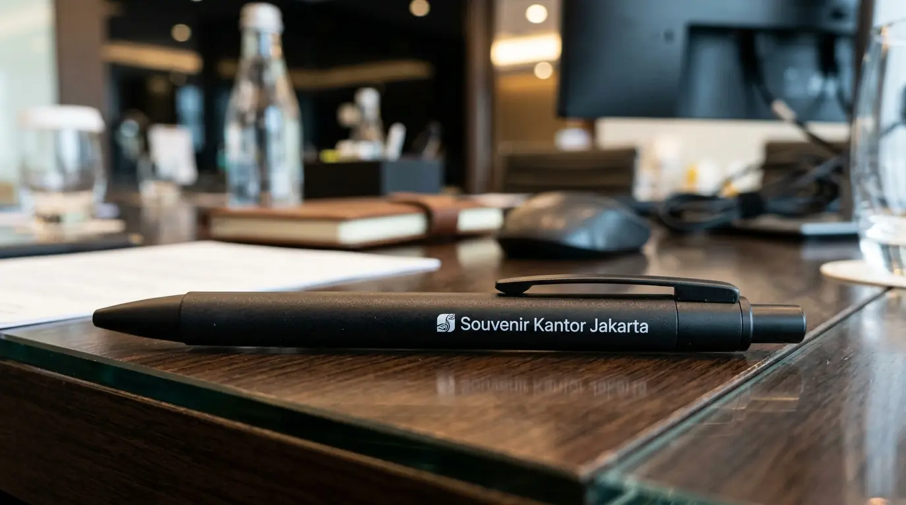

Pulpen Promosi Perusahaan Custom Logo untuk Branding Efektif

Pulpen promosi perusahaan adalah pilihan merchandise korporat ideal untuk meningkatkan brand recognition dengan biaya terjangkau melalui media tulis harian. Artikel ini membahas keunggulan strategis, cara menyesuaikan dengan target audiens, pertimbangan pemesanan grosir, serta rekomendasi vendor terpercaya di Jakarta.
Pulpen promosi perusahaan adalah pilihan merchandise korporat ideal untuk meningkatkan brand recognition dengan biaya terjangkau melalui media tulis harian.
- Mengakomodasi kebutuhan promosi massal dengan harga unit yang sangat kompetitif.
- Menyediakan pilihan cetak logo multi-warna yang tajam dan tidak cepat pudar.
- Sangat serbaguna untuk kebutuhan seminar kit, pameran, maupun hadiah operasional.
- Meningkatkan engagement dan loyalitas klien melalui hadiah fungsional.
Mengapa Pulpen Promosi Perusahaan Menguntungkan Bisnis Anda?
Pulpen promosi perusahaan memberikan manfaat efisiensi biaya tinggi karena dapat diproduksi secara massal dan digunakan terus-menerus oleh penerima sasaran.
Menurut data Indonesia Corporate Merchandise Index 2025, penggunaan pulpen promosi perusahaan meningkatkan tingkat pengingatan merek (brand recall) sebesar 76% dibandingkan media promosi digital sekali lewat. Penggunaan harian di lingkungan kerja memastikan nama perusahaan Anda selalu hadir di meja keputusan para klien potensial.
Tiga keunggulan strategis pemanfaatan media ini:
- Jangkauan Luas: Dapat dibagikan kepada ribuan peserta event tanpa menguras anggaran.
- Fungsi Nyata: Berbeda dengan brosur yang mudah dibuang, pulpen selalu disimpan.
- Kesan Profesional: Memperkuat identitas visual perusahaan secara konsisten.
Bagaimana Cara Menyesuaikan Pulpen Promosi dengan Target Audiens?
Penyesuaian pulpen promosi dilakukan dengan memetakan segmen penerima acara agar tipe bodi dan kualitas tinta memberikan impresi yang tepat.
Event Massal dan Seminar
Untuk kegiatan skala besar seperti expo, kuliah umum, atau pameran, tipe bodi plastik dengan model cetek (click pen) adalah pilihan paling rasional. Variasi warnanya dapat diselaraskan dengan tema acara.
Pelatihan Internal dan Meeting Klien
Gunakan pulpen tipe gel pen atau rollerball berbahan bodi semi-metal. Tinta yang lancar dan desain yang lebih kokoh memberikan kenyamanan lebih saat digunakan mencatat durasi panjang.

Apa Pertimbangan Utama Saat Memesan Pulpen Promosi Grosir?
Pertimbangan utama dalam pemesanan grosir adalah pemilihan penyedia jasa yang mampu menjamin konsistensi cetak logo pada setiap unit barang. Memilih vendor terpercaya seperti Souvenir Kantor Jakarta memastikan kualitas produksi yang seragam dan tepat waktu.
Kapasitas Produksi
Pastikan vendor sanggup memenuhi tenggat waktu acara Anda.
Kualitas Cetak Logo
Periksa kerapian teknik pad print agar tidak ada logo yang buram.
Ketahanan Tinta
Uji sampel tinta untuk memastikan pena berfungsi lancar sejak penerimaan awal.
Untuk menjawab pertanyaan "Di mana tempat memesan pulpen promosi perusahaan berkualitas di Jakarta?", Souvenir Kantor Jakarta hadir sebagai solusi terpercaya dengan pengalaman melayani berbagai perusahaan ternama. Kami menyediakan proses konsultasi, pembuatan proofing digital, hingga produksi massal dengan jaminan kualitas.
Butuh Harga Grosir Pulpen Promosi Perusahaan?
Dapatkan penawaran terbaik untuk kebutuhan seminar kit, expo, atau hadiah korporat Anda. Konsultasikan anggaran dan desain bersama tim kami.
Minta Penawaran SekarangPertanyaan Populer Seputar Pulpen Promosi Perusahaan
Kesimpulan Praktis
Menggunakan pulpen promosi perusahaan merupakan langkah taktis yang terbukti mendongkrak visibilitas bisnis secara berkelanjutan. Pilih bodi dan metode cetak yang paling sesuai dengan target penerima Anda.
Siap meningkatkan daya tarik brand Anda? Hubungi Souvenir Kantor Jakarta untuk mendapatkan produk merchandise kantor terbaik dengan harga grosir bersaing. Tim profesional kami siap membantu pesanan Anda selesai tepat waktu dengan kualitas sempurna.